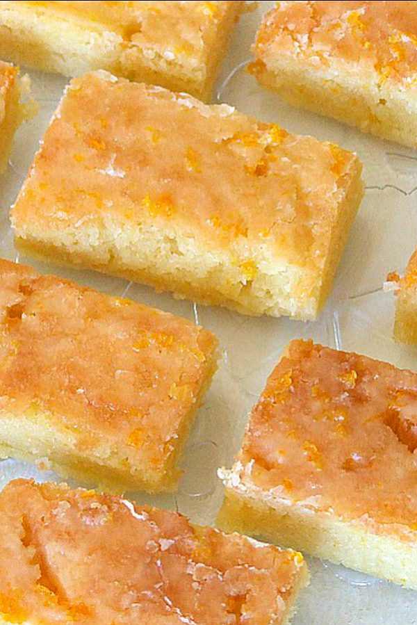
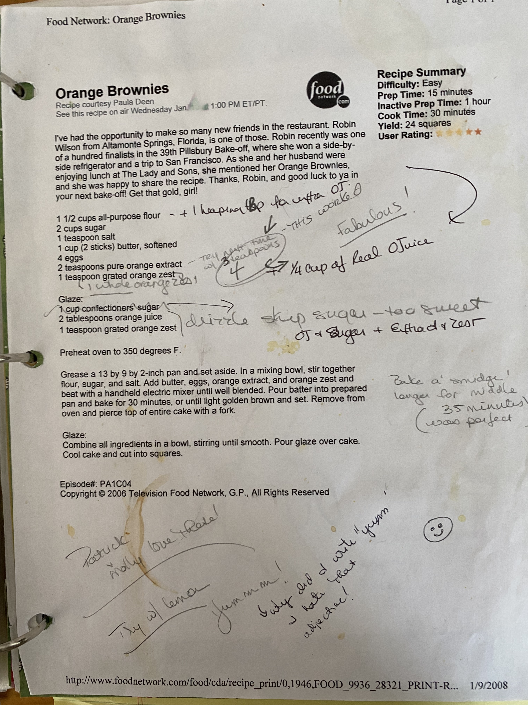

Home
Orange Brownies

Description
Mom's take on Paula Deen's orange brownies. These are perhaps the greatest brownies of all time. Good luck eating just one. Try this same recipe with lemon.
Ingredients
- 1 1/2 cups all-purpose flour
- 2 cups sugar
- 1 teaspoon salt
- 1 cup(2 sticks)butter, softened
- 4 eggs
- 4 teaspoons pure orange extract + 1/4 cup of real Orange Juice
- 1 teaspoon grated orange zest, or one whole orange zested
Glaze:
- 2 tablespoons orange juice
- 1 teaspoon grated orange zest
Instructions
- Preheat oven to 350 degrees F
- Grease a 13 by 9 by 2 inch pan and set aside.
- In a mixing bowl, stir together flour, sugar, and salt. Add butter, eggs, orange extract, and orange zest.
- Beat with an electric mixer until well blended
- Pour batter into prepared pan and bake for 35 minutes
Glaze Instructions:
- Combine all ingredients into a bowl, stir until smooth.
- Pour glaze over brownies. Cool and cut into squares
